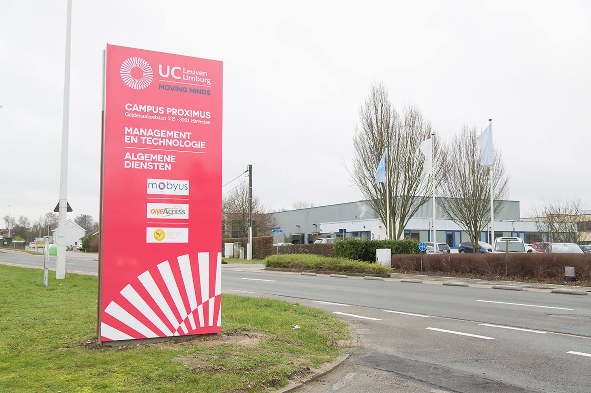
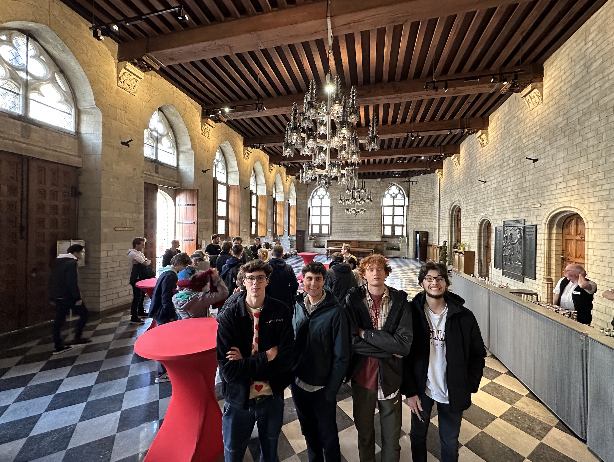
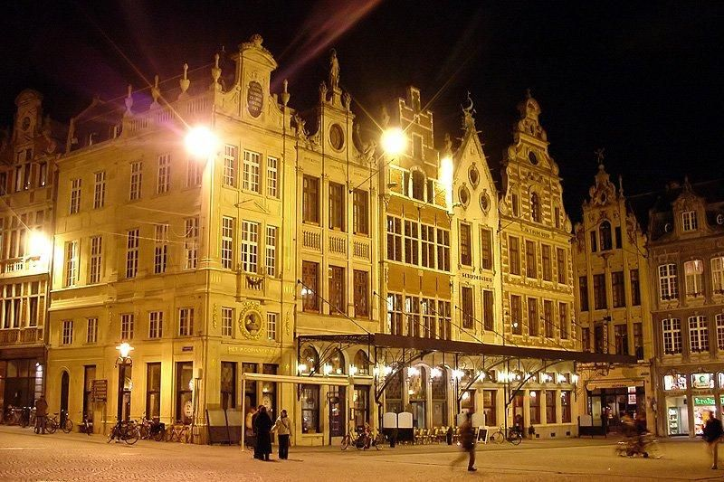

Monday - 17/4 - A Day at UCLL: Exploring AI and Football
Statistics
Leuven, a picturesque Belgian city, is not only renowned for
its architecture and history but also as a technology and
innovation hub. The University College Leuven-Limburg (UCLL)
leads this progress with its dynamic courses and diverse
student body. In this blog, I recount my memorable day at
UCLL, exploring AI, deep learning, and football statistics.
Our day began with a captivating lecture on AI and deep
learning, where the instructor provided clear expectations
for our end results. The excitement heightened as we delved
into applying these techniques to real-world problems using
AI algorithms and databases.
Post-lunch, we immersed ourselves in football, gaining
access to a dataset containing detailed Oud-Heverlee Leuven
(OHL) football club statistics, covering every action during
their matches throughout the season. In groups of five, we
collaborated with UCLL students and international students
from various backgrounds, enriching the experience through
shared ideas and learning.
The diverse group of learners tackled the task of analyzing
the data using the AI and deep learning techniques learned
earlier, while also managing the data with the database.
This hands-on approach to learning exemplified the
innovative spirit of UCLL, solidifying its reputation as a
leader in technology and education.

Written By Liam Delagrense
Tuesday - 18/4 - Developing Football Talent and Embracing
Local Culture in OHL's Town
Today, we worked on the project for the OHL football club.
Our team was tasked with developing a program to help
identify talented goalkeepers more easily. We spent most of
the day brainstorming and developing ideas, and we were able
to come up with a solution that we were all proud of.
Later in the evening, we decided to explore the town and
immerse ourselves in the local culture. We joined other
international members and headed to the town hall to attend
a speech. The atmosphere was lively and engaging, and we
enjoyed the opportunity to meet new people and share our
experiences.
After the speech, we decided to unwind and relax by having
dinner at the popular restaurant, Balls and Glory. We
indulged in delicious meatballs and sides, and we were all
impressed by the restaurant's unique and inventive menu.
To cap off the night, we headed to "De Oude Markt" for a few
drinks. The lively atmosphere and friendly locals made for a
memorable experience, and we were all glad we had taken the
opportunity to experience a bit of the local nightlife.

Written By Joachim Vanthomme
Wednesday - 19/4 - Collaborative Efforts and Overcoming
Challenges
On Wednesday, we started the day with a discussion with our
teachers about the progress of our project. Each group had
its own meeting, where we shared our ideas and updates on
our individual tasks. The discussion was insightful, and we
received valuable feedback on how we could improve our
output.
After the meetings, we spent the rest of the day working on
our individual tasks. Our primary goal for the day was to
finish the database queries that filtered all the football
data and start working on visualisation. We divided
ourselves into small groups and worked collaboratively to
ensure that we made significant progress by the end of the
day.
As the day progressed, we encountered some challenges that
we had to overcome, but we managed to solve them by using
teamwork and problem-solving skills. By the end of the day,
we were pleased with the progress we had made, and we had a
small discussion within each group about the plan for the
following day.
Later in the evening, we decided to explore the old market
area of the city. We walked around and explored some of the
cosy cafes and tried some delicious local cuisine. We also
had some beer, which was the perfect way to relax and unwind
after a busy day. We didn't stay out too late because we
wanted to be fresh and ready for the project the next day.
 Written By Victor Barra
Written By Victor Barra
Thursday - 17/4 - Preparing for Success: A Productive
Thursday Evening
Thursday evening was a crucial one for our group as we
needed to finalize our preparation for the presentation
scheduled on Friday. Despite the pressure, we were
determined to make the most of our day.
As we settled down to work, we realized how far we had come
with our project. Our group was almost finished with the
visualization, and we felt confident about the progress we
had made. We divided our tasks, worked collaboratively, and
reviewed each other's work.
Finally, after several hours of hard work, we achieved our
goal for the day. Our preparation for the presentation
was complete, and we felt confident in the outcome. We were
ready to showcase our hard work and dedication the following
day.
The IBM organization invited our international group to a well-organized dinner. However, Denis and two other students had to wait until Iftar, which is the time when Muslims break their fast during Ramadan, causing a slight delay. This was on problem as we insisted that we would wait for them. Afterward, we concluded the evening with some drinks, ice cream, and a restful night's sleep.

Written By Ward Janssens
Friday - 18/4 - A Day of Stress, Rehearsals, and Fries
We've received our daily dose of stress early, by waking up
around 8h10. It's friday or 'present your project day' and
thus arriving late was not part of the schedule. When making
our beds and opening our blinds to let some light in, a
realisation came to us as a beam of light. Victor, Liam and
I had to hand in our bed sheets, clean up our mess or else
we would face a fifty dollar fine. So on top of nearly being
late, we also had to rush and clean our room.
Finally done cleaning, luggage packed, ready to go and give
this presentation. Liam and I had to present at a later
time, but Victor had to present around 9h10. Victor managed
to make it in time and Liam and I used that extra time to
rehearse for our project. While in different groups we still
had somewhat the same outcome.
Preparing to present our project was the hardest part, as I
was sweating bullets. This might be related to us running to
catch the bus as if we were being chased by demons, but this
presentation was also in front of the OHL team. The scope of
the project, as mentioned before, was providing the OHL
football club a visual 'app', so that they could use it to
determine the status of players. My presentation went
alright, it was not one of the best by far, but I have
gotten a few compliments from the staff for my visualisation
of their data.
There were a total of twenty one groups and only three
groups were allowed to present their findings for the entire
class with OHL staff included. Neither of us Howest students
managed to get into the top three. To be honest, we tried
our best to present something decent, but when I tell you
that our projects didn't even scratch the surface of what
these top three groups did. Their visualisation was on a
different level and you couldn't compare it to ours. The OHL
staff were so impressed with their findings that the best
group received OHL football t-shirts. The rest received
scratch off tickets and coupons.
By being in Belgium, we obviously had to grab some fries for
lunch provided by IBM and UCLL. We have made some friends
and enemies along the way, but overall this trip to Leuven
was pretty amazing.
 Written By Denis Topallaj
Written By Denis Topallaj